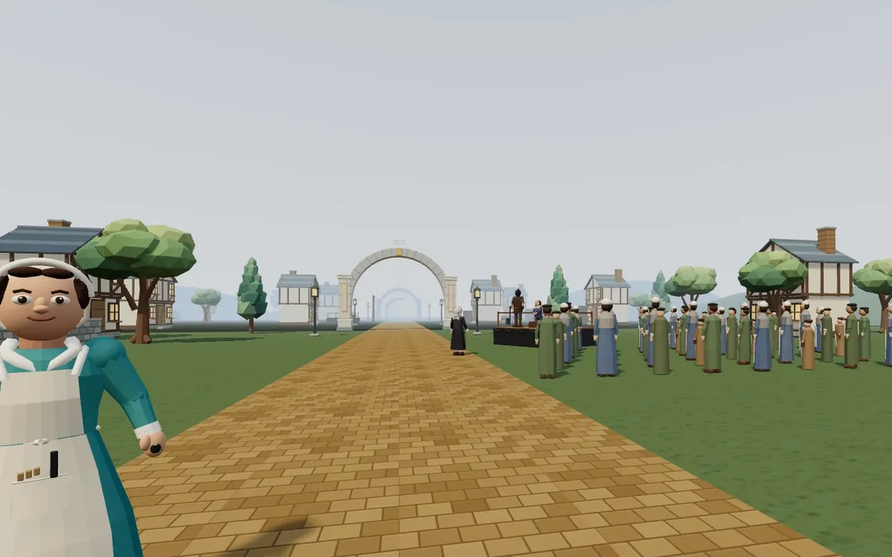
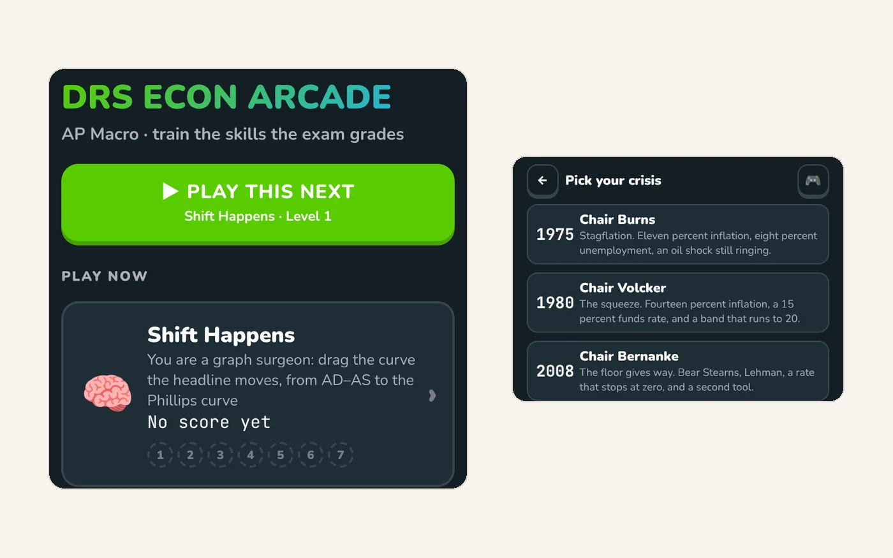
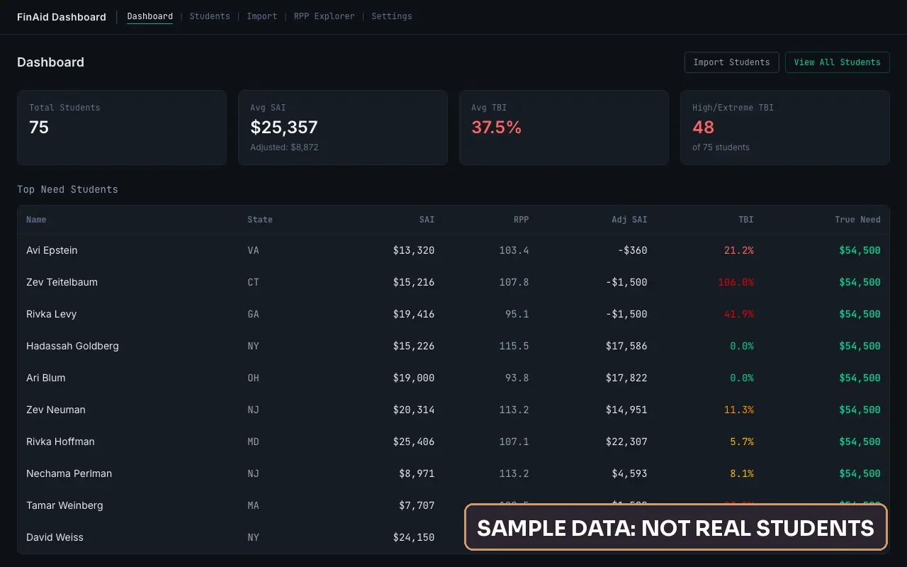

AI for schools and ed-tech
AI that works in a real classroom.
I'm David Bassin. I teach high school history and AP Macro, and I build the learning tools my students use. For schools, I offer teacher training and classroom tools. For ed-tech teams, I offer a working teacher's eye on your product.
I also teach your team how it works, so they can run it without me.
Many teachers have AI tools and little training.
No training
A login does not show a teacher what AI is good for, or where it goes wrong.
Students are already using it
School rules written before AI do not cover it. Students need clear rules, and so do teachers.
Built far from the classroom
Class periods are short, Chromebooks are shared, some students have IEPs, and the printer is black and white. A lot of AI training and AI products miss that.
What I offer
I make everything myself, and I hand it off so your team can keep it going.
For schools
Help your teachers use AI well.
Teacher workshops and coaching
Hands-on sessions where every teacher makes something they will use next week, then checks it before it reaches a student. See a sample workshop plan
Custom classroom tools
Short history videos, review games, and worksheets built around your curriculum, your calendar, and your devices.
AI guidelines for your school
Clear rules for staff and students, written with your team, with a one-page version teachers can use in class. See sample guidelines
Less paperwork
Pacing calendars that absorb sick days, first drafts of weekly updates, and fewer things typed twice.
For ed-tech teams
Make tools teachers will actually use.
A teacher's eye on your product
I use your tool with a real unit and a 38-minute period, and tell you plainly where teachers will use it and where they will drop it.
Lessons and demos
Sample lessons and short videos that show your tool inside a class, made the way I make my own. See a teacher guide I wrote
Teacher training for your tool
Workshops and short guides that help teachers start using your product well.
Classroom-ready checks
Does it work on a shared Chromebook and on a phone? For students with IEPs? On a black-and-white printer? I check these before your users do.
On my school's AI Task Force, I coach teachers and helped write our AI guidelines.
What I have built
Most of these I made for my own students, and the live ones are free to try. I built the last two outside school.

Short videos for the French Revolution unit
A series of short narrated videos for my history class, made with AI from historical paintings and prints, with captions on screen. The documentaries end on a question for discussion.

Road to Revolution
A 3D review game for the Enlightenment and the French Revolution. Hobbes, Locke, Montesquieu, and Rousseau teach inside the world, all 213 lines are spoken, and it runs on a phone.
Play Road to Revolution
The DRS Econ Arcade
Seven arcade games for the skills the AP exam grades: shift the curve a headline moves, run the Fed through a real crisis, find the mistakes on a graph.
Open the DRS Econ Arcade

An IEP version of every worksheet
History lessons with primary sources and an IEP version that keeps the same thinking: bigger type, more space, and shorter chunks.

FinAid Dashboard
Built with a university financial aid counselor. It adjusts the federal aid formula for regional cost of living and K-12 tuition, and shows each step of the math. The demo uses made-up students.
A customer calls
Caller: "Hi, I have a big leak in my bathroom. I'm at 12 Oak Lane. Can someone come today?"Office: "Yes. A tech can be there in about an hour. The visit is $150."
AI writes it down and pulls out the job
- Job
- Leak repair
- Urgency
- Emergency
- Address
- 12 Oak Lane
- Price quoted
- $150
- Next step
- Tech on site in about an hour
A new deal is waiting in the CRM
Leak repair, 12 Oak Lane · $150 · Emergency
A call system that turns a phone call into a CRM deal
When a call ends, AI writes down what was said and pulls out the address, the job, how urgent it is, the price quoted, and the next step. A new deal shows up in the CRM in under a minute. It is designed to work with the phone number and CRM a business already has. Built with Twilio, Whisper, an LLM, and Pipedrive.
How it works
A free 30-minute call
We talk about your school or your product, and what you want to fix. If AI is not the answer, I will tell you.
A small pilot
One workshop, one department, or one feature tried in a real unit. Something you can see working within a few weeks.
Hand it off
Your team learns to make and check their own. You keep everything we build.

A teacher who builds.
I teach AP Macroeconomics and Global History at a high school on Long Island, and I build the learning tools my students use. Outside school, I've also built a call system that turns phone calls into CRM deals, and a financial aid dashboard with a university counselor. I have worked in schools since 2016.
Before teaching, I worked in IT support. On my school's AI Task Force, I coach teachers and helped write our AI guidelines. I check everything AI makes before anyone else sees it. I hold an M.S. in Education from Pace University.
See more of my workTell me about your school or your product.
A few lines is plenty: who you are, what you teach, run, or build, and what you would like AI to help with. I answer every message myself.
Rather talk? Book a free 30-minute call, or email david@bassinconsulting.com.
Message sent.
Thanks. I'll write back within a few days.